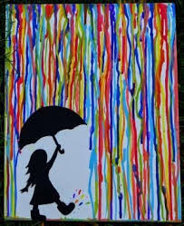

Licencia Creative Commons Zero (CC0).
La técnica de Acuarela, es uno de los métodos pictóricos más tradicionales y delicados en las artes visuales. Consiste en la aplicación de pigmentos finamente molidos y disueltos en agua sobre un soporte poroso (generalmente papel).
El aglutinante principal de la acuarela es la goma arábiga, una sustancia vegetal que fija el pigmento al papel una vez que el agua se evapora. Lo que define a esta técnica es su transparencia: los colores no son opacos, por lo que la luz atraviesa las capas de pintura y se refleja en la blancura del papel, otorgando a las obras una luminosidad, fluidez y frescura únicas.
Principales características
- Transparencia y superposición (Glaseados): Las acuarelas no utilizan pigmento blanco para aclarar los tonos; la "luz" de la obra la aporta el propio papel blanco. Los colores se aclaran añadiendo más agua y se oscurecen superponiendo capas translúcidas una vez que la anterior se ha secado.
- Fluidez y espontaneidad: El agua actúa como un vehículo impredecible. La interacción del agua y el pigmento sobre el papel húmedo genera efectos orgánicos, texturas y mezclas aleatorias que aportan una gran expresividad y dinamismo.
- Irreversibilidad y control del tiempo: Es una técnica exigente porque corregir errores es complejo (especialmente en tonos oscuros). El artista debe aprender a trabajar con los tiempos de secado del papel (técnica de húmedo sobre húmedo o húmedo sobre seco).
- Portabilidad y limpieza: Al ser una pintura a base de agua, es inodora, no tóxica (en su mayoría) y muy fácil de limpiar, lo que la hace ideal tanto para estudios de artista como para la pintura al aire libre (plein air).
Materiales Necesarios
- Pinturas (Pastillas o Tubos):
- Pastillas (Wans / Godets): Bloques secos de pintura que se activan fácilmente con un pincel húmedo. Son excelentes para llevar de viaje o bocetar.
- Tubos: Pintura en estado cremoso con mayor concentración de humedad y pigmento fresco, ideal para mezclas rápidas y grandes cantidades de color.
- Papel para acuarela (El soporte más crítico):
- Debe tener un gramaje alto, idealmente de 300 g/m² o superior, para evitar que el papel se deforme u "ondule" (buckling) excesivamente con el agua.
- Se clasifica por su textura: grano fino (liso, ideal para detalles), grano anticuario/medio (versátil) y grano grueso (aporta texturas rugosas y orgánicas).
- Pinceles para acuarela:
- Pinceles de pelo suave (tradicionalmente de Marta Kolinsky o, en alternativas sintéticas de alta calidad, imitaciones que retienen muy bien el agua y la forma).
- Se suelen usar pinceles redondos de punta fina para detalles y trazos, y pinceles planos o de marta grandes (mop brushes) para lavados de fondos y cielos.
- Elementos auxiliares:
- Paleta de mezclas: Una superficie blanca (de plástico, cerámica o porcelana) para diluir y mezclar los colores antes de llevarlos al papel.
Cinta de papel o de carrocero: Para fijar los bordes del papel a una tabla rígida y evitar que se curve al secarse, dejando un margen blanco limpio al retirar la cinta. - Dos recipientes con agua: Uno para enjuagar los pinceles sucios y otro para tomar agua limpia al mezclar los colores.
- Papel absorbente o servilletas: Indispensables para controlar la cantidad de humedad en el pincel o corregir pequeños excesos de agua en la obra.
- Paleta de mezclas: Una superficie blanca (de plástico, cerámica o porcelana) para diluir y mezclar los colores antes de llevarlos al papel.
Para comprender más sobre el tema observa el siguiente video:
Para comprender más sobre el tema analiza la siguiente información:

¡Es tu turno, realiza la práctica de acuerdo a las indicaciones de tu maestro!